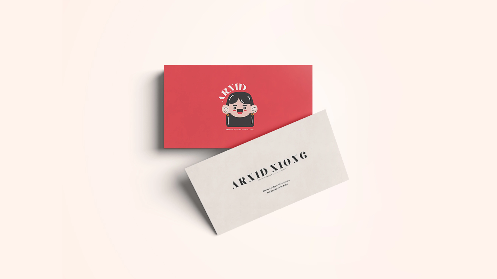
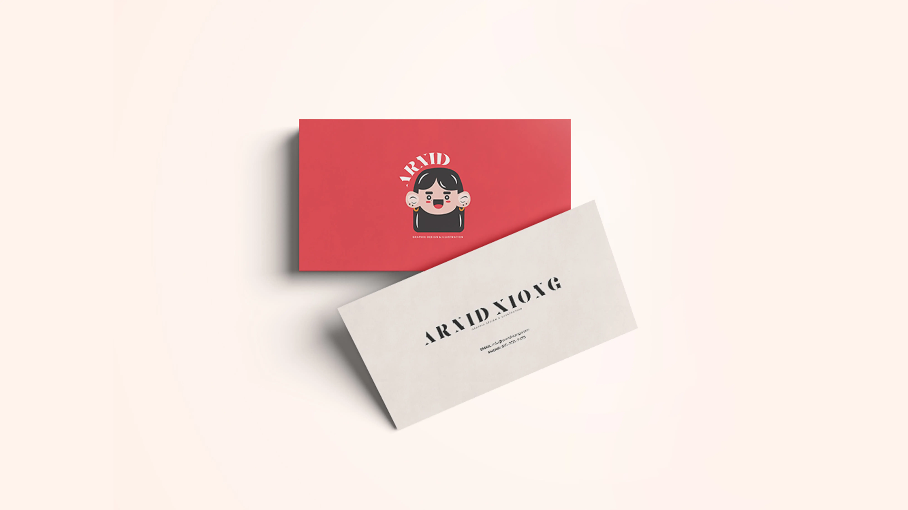

See More

Young Living Website

Email Graphic

Building Website

Journey Map
I wanted to explore and re-design my personal Building Website to something completely different. For this new style, I’ve chosen colors that I feel more related to my personality and as a designer. I went for colors that are strong, bold and bright. For instance like, red, orange, and turquoise. They are colors that I feel most comfortable with. Instead of creating a new logo, I wanted to illustrate a character of myself. It was fun and I like that I can use it as a part of my logo. After all, this new re-design Building Website was a fun process and I get to learn a lot and find inspiration from other designers as well.

 

See More